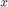

Canny Edge Detection
This sample demonstrates Canny edge detection.
In this demo, we show how to use the OpenCV function cv.Canny to implement the Canny Edge Detector.
Sources:
- https://github.com/opencv/opencv/blob/3.2.0/samples/cpp/edge.cpp
- https://github.com/opencv/opencv/blob/3.2.0/samples/python/edge.py
- https://docs.opencv.org/3.2.0/da/d5c/tutorial_canny_detector.html
- https://docs.opencv.org/3.2.0/da/d22/tutorial_py_canny.html
- https://github.com/opencv/opencv/blob/3.2.0/samples/cpp/tutorial_code/ImgTrans/CannyDetector_Demo.cpp
Contents
Theory
The Canny Edge detector was developed by John F. Canny in 1986. Also known to many as the optimal detector, the Canny algorithm aims to satisfy three main criteria:
- Low error rate: Meaning a good detection of only existent edges.
- Good localization: The distance between edge pixels detected and real edge pixels have to be minimized.
- Minimal response: Only one detector response per edge.
Steps
1) Filter out any noise. The Gaussian filter is used for this purpose. An example of a Gaussian kernel of that might be used is shown below:
2) Find the intensity gradient of the image. For this, we follow a procedure analogous to Sobel:
- Apply a pair of convolution masks (in  and
 directions):
directions):
- Find the gradient strength and direction. The direction is rounded to one of four possible angles (namely 0, 45, 90 or 135)

3) Non-maximum suppression is applied. This removes pixels that are not considered to be part of an edge. Hence, only thin lines (candidate edges) will remain.
4) Hysteresis: The final step. Canny does use two thresholds (upper and lower). Canny recommended a upper:lower ratio between 2:1 and 3:1.
- If a pixel gradient is higher than the upper threshold, the pixel is accepted as an edge
- If a pixel gradient value is below the lower threshold, then it is rejected.
- If the pixel gradient is between the two thresholds, then it will be accepted only if it is connected to a pixel that is above the upper threshold.
For more details, you can always consult your favorite Computer Vision book.
Code
This program:
- Asks the user to enter a numerical value to set the lower threshold for our Canny Edge Detector (by means of a slider)
- Applies the Canny Detector and generates a mask (bright lines representing the edges on a black background)
- Applies the mask obtained on the original image and display it in a window
function varargout = edge_demo_gui(im) % load source image if nargin < 1 im = fullfile(mexopencv.root(),'test','fruits.jpg'); src = cv.imread(im, 'Color',true); elseif ischar(im) src = cv.imread(im, 'Color',true); else src = im; end % create the UI h = buildGUI(src); if nargout > 0, varargout{1} = h; end end function onChange(~,~,h) %ONCHANGE Event handler for UI controls % retrieve current values from UI controls apertures = [3, 5, 7]; aIdx = get(h.pop, 'Value'); thresh = round(get(h.slid, 'Value')); set(h.txt, 'String',sprintf('Threshold: %3d',thresh)); % convert image to grayscale, and blur to reduce the noise gray = cv.cvtColor(h.src, 'RGB2GRAY'); gray = cv.blur(gray, 'KSize',[3 3]); % detect edges, with 3:1 as threshold ratio if true % default canny (Sobel gradient) edges = cv.Canny(gray, thresh*[1 3], 'ApertureSize',apertures(aIdx)); else % canny with custom gradient (Scharr) dx = cv.Scharr(gray, 'DDepth','int16', 'XOrder',1, 'YOrder',0); dy = cv.Scharr(gray, 'DDepth','int16', 'XOrder',0, 'YOrder',1); edges = cv.Canny2(dx, dy, thresh*[1 3]); end % apply edges mask on original image if true out = cv.copyTo(h.src, 'Mask',edges); else out = bsxfun(@times, h.src, uint8(edges~=0)); end % show result set(h.img, 'CData',out); drawnow; end function h = buildGUI(img) %BUILDGUI Creates the UI % parameters thresh = 10; max_thresh = 150; sz = size(img); sz(2) = max(sz(2), 300); % minimum figure width % build the user interface (no resizing to keep it simple) h = struct(); h.src = img; h.fig = figure('Name','Edge map', ... 'NumberTitle','off', 'Menubar','none', 'Resize','off', ... 'Position',[200 200 sz(2) sz(1)+29]); if ~mexopencv.isOctave() %HACK: not implemented in Octave movegui(h.fig, 'center'); end h.ax = axes('Parent',h.fig, ... 'Units','pixels', 'Position',[1 30 sz(2) sz(1)]); if ~mexopencv.isOctave() h.img = imshow(img, 'Parent',h.ax); else %HACK: https://savannah.gnu.org/bugs/index.php?45473 axes(h.ax); h.img = imshow(img); end uicontrol('Parent',h.fig, 'Style','text', 'FontSize',11, ... 'Position',[5 5 65 20], 'String','Aperture'); h.pop = uicontrol('Parent',h.fig, 'Style','popupmenu', 'Value',1, ... 'Position',[70 5 40 20], 'String',{'3','5','7'}); h.txt = uicontrol('Parent',h.fig, 'Style','text', 'FontSize',11, ... 'Position',[110 5 120 20], 'String',sprintf('Threshold: %3d',thresh)); h.slid = uicontrol('Parent',h.fig, 'Style','slider', 'Value',thresh, ... 'Min',0, 'Max',max_thresh, 'SliderStep',[1 10]./(max_thresh-0), ... 'Position',[230 5 sz(2)-230-5 20]); % hook event handlers, and trigger default start set([h.pop, h.slid], 'Callback',{@onChange,h}, ... 'Interruptible','off', 'BusyAction','cancel'); onChange([],[],h); end